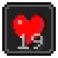

Status Effect Timer

Status: Ported - Upstream licence: GNU Lesser General Public License v3.0 only - 26.3 build: statuseffecttimer-2.0.0+26.3 - Modrinth
Project: effect-timer - docs
Where it stands
Effect Timer (raw-hook port: reads the active effects)
Ported: a project in this repository re-implements it.
Credit
Status Effect Timer belongs to magicus; see its Modrinth page. No code or text from it is copied here. The icon above is the project's own icon from Modrinth, by magicus, shown only to identify the mod; it is not covered by this repository's licence and comes down on request (see DMCA and takedowns). Back to the catalogue.